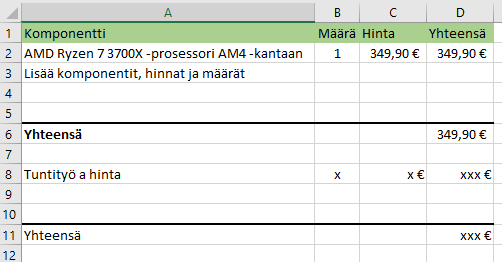

Tässä harjoituksessa tehdään laskelma pelikoneen hankinnasta ja sen perusteella tarjous.
Teet opiskelijana kevytyrittäjän pieniä laitteistoihin liittyviä työtehtäviä. Asiakkaasi haluaa ostaa tehokkaan pelitietokoneen. Hän harkitsee seuraavaa Gigantin pelikonetta:
Asiakkaasi pitää konetta kuitenkin kalliina ja pyytää sinua tarjoamaan vaihtoehtoa.
Laske koneen kokoamisen kustannukset. Ota huomioon kustannuksiin myös osien tilaamiseen ja konsultointiin kuluva aika (tuntimääräarvio) ja tuntihinta (mikä on sopiva?). Voit myös tehdä katsauksen siitä, kuinka paljon alan liikkeet ottavat palkkiota kasaamisesta. Arvonlisäveroa ei opiskelijan työstä tarvitse periä, sen sijaan osista opiskelija joutuu sellaisen maksamaan.
Laadi Excelillä tarjousta varten eritelty (eli kaikki asiat erikseen) yhteenveto osien hankkimisen ja hankkimiseen sekä kasaamiseen kuluvan työn kustannuksista, laske lopullinen hinta ja tee arvio, kannattaako kasaaminen itse.

Jos katetuottotavoite on 20%, paljonko hinta on siinä tapauksessa? Tässä muuttuvat kustannukset ovat siis osat ja koneeseen liittyvään työhön kuuluva korvaus eli aikaisemmin tehty laskelma. Entä jos joutuisit maksamaan arvonlisäveroa?
Laadi sen jälkeen tarjous (asiakirjastandardin SFS 2487 mukainen) MS Wordillä, liitä mukaan Excelistä tieto mistä hintasi muodostuu. Tallenna työ OneDrive-kansioosi (tarjous_pelikone.docx).